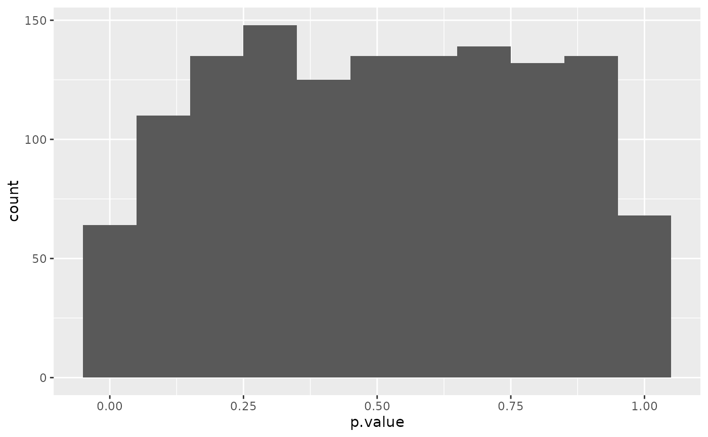
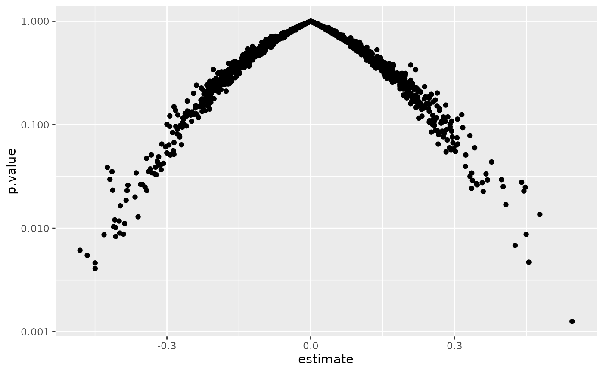

Tidy summarizes information about the components of a model. A model component might be a single term in a regression, a single hypothesis, a cluster, or a class. Exactly what tidy considers to be a model component varies across models but is usually self-evident. If a model has several distinct types of components, you will need to specify which components to return.
# S3 method for rcorr tidy(x, diagonal = FALSE, ...)
| x | An |
|---|---|
| diagonal | Logical indicating whether or not to include diagonal
elements of the correlation matrix, or the correlation of a column with
itself. For the elements, |
| ... | Additional arguments. Not used. Needed to match generic
signature only. Cautionary note: Misspelled arguments will be
absorbed in |
Suppose the original data has columns A and B. In the correlation
matrix from rcorr there may be entries for both the cor(A, B) and
cor(B, A). Only one of these pairs will ever be present in the tidy
output.
A tibble::tibble() with columns:
Name or index of the first column being described.
Name or index of the second column being described.
The estimated value of the regression term.
The two-sided p-value associated with the observed statistic.
Number of observations used to compute the correlation
#>#> #>#> #> #>#> #> #>#> #> #>#> #> #>#> #> #>#> #> #>mat <- replicate(52, rnorm(100)) # add some NAs mat[sample(length(mat), 2000)] <- NA # also column names colnames(mat) <- c(LETTERS, letters) rc <- rcorr(mat) td <- tidy(rc) td#> # A tibble: 1,326 x 5 #> column1 column2 estimate n p.value #> <chr> <chr> <dbl> <int> <dbl> #> 1 B A 0.0670 36 0.698 #> 2 C A 0.196 38 0.239 #> 3 C B 0.172 37 0.309 #> 4 D A -0.0397 36 0.818 #> 5 D B -0.00762 31 0.968 #> 6 D C 0.250 42 0.110 #> 7 E A 0.224 36 0.189 #> 8 E B 0.0700 35 0.690 #> 9 E C 0.211 46 0.159 #> 10 E D 0.147 40 0.364 #> # … with 1,316 more rows